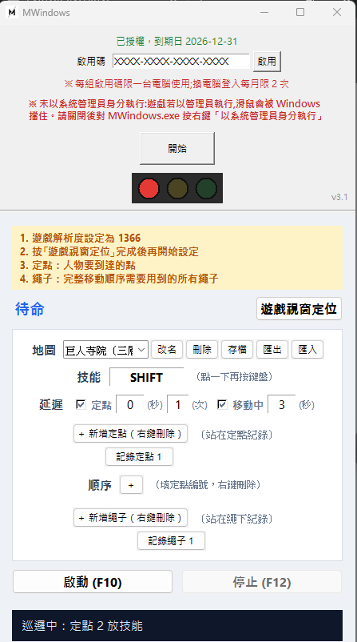

自動偵測畫面、自動接手追蹤，結束後滑鼠立刻還給你。
內建自動巡邏，一個視窗、一組啟用碼全部搞定。
加入 LINE 官方好友即可購買啟用碼，完整功能都能用。

按下「開始」之後，全程自動追蹤。
不用調參數、不用看教學影片，打開就能用。
按「開始」後自動偵測遊戲畫面，需要時自動接手滑鼠，穩定又精準。
按「停止」或按住 Esc 約半秒，滑鼠馬上還給你，完全不卡手。
自訂定點、順序、繩子與技能鍵，可逐點指定哪些點放技能、也能定時自動休息；需要追蹤時自動暫停巡邏，結束後接著巡。
辨識資料會自動更新，越用越準，不必重新下載安裝。
每張地圖一組路線，可匯出成檔案，搬到另一台電腦直接匯入使用。
紅綠黃燈號顯示目前狀態，視窗位置自動記住，開了就能繼續。
免安裝，解壓縮後直接執行。
下載最新版 .zip，按右鍵 →「全部解壓縮」，再執行資料夾裡的 MWindows.exe。
按「其他資訊」→「仍要執行」。
建議按「是」。遊戲以系統管理員執行時，MWindows 也要以系統管理員執行才控制得到滑鼠。
先安裝微軟 Visual C++ 可轉散發套件（x64），再開一次即可。
輸入一次，之後開啟自動記住。
在「啟用碼」欄位輸入啟用碼，按「啟用」，看到綠色「已授權」就完成了。
程式有兩個功能，都要先完成「啟用」。
巡邏中需要追蹤時會自動暫停巡邏、切去追蹤，結束後再接著巡邏。
第一次設定前：把遊戲解析度設成 1366，並讓遊戲畫面完整顯示在螢幕上。
按「遊戲視窗定位」，程式會把遊戲視窗移到固定位置。每次設定路線前都先按一次。
在「地圖」下拉選單選一張地圖，每張地圖是一組獨立路線。選單最上面的「＋」可新增空白地圖；「改名」「刪除」用來管理地圖。
點「技能」旁的方塊，再按一下遊戲裡的攻擊／技能鍵。
按「＋ 新增定點」→ 讓角色站到要停的位置 → 按該列的「定點」按鈕記錄。重複到路線上每個點都記好，多的欄位按右鍵刪除。
在「順序」填定點編號（例如 1 2 3），走完會回到第一個形成循環。
路線需要爬繩往上時，把整段會用到的每一條繩子都記起來：按「＋ 新增繩子」→ 讓角色站到繩子正下方的地面 → 按該列的「繩子」按鈕記錄。
按「存檔」（按鈕上有 * 代表還沒存），下次開啟自動載入。
F10 開始、F12 停止。想在別台電腦用同一套路線，用「匯出」存成檔案，到另一台按「匯入」即可。
遇到問題先看這裡。
確認網路正常，稍後再按一次「啟用」。
這組啟用碼正在別台電腦使用，或本月換電腦次數（2 次）已用完。
請透過 LINE 聯絡我們續約。
請把輸入法切成英文再試一次。
遊戲若以系統管理員執行，請讓 MWindows 也以系統管理員執行（開啟時那題按「是」，或對 MWindows.exe 按右鍵「以系統管理員身分執行」）。
辨識資料會自動更新；只有程式本身改版時才需要下載新版 .zip。
程式會連線驗證啟用碼，並將遊戲部分畫面資料加密回傳以改善辨識；不會收集遊戲畫面以外的螢幕內容、檔案或個人資料。
購買或使用本程式前請詳細閱讀，購買即視為同意以下條款。